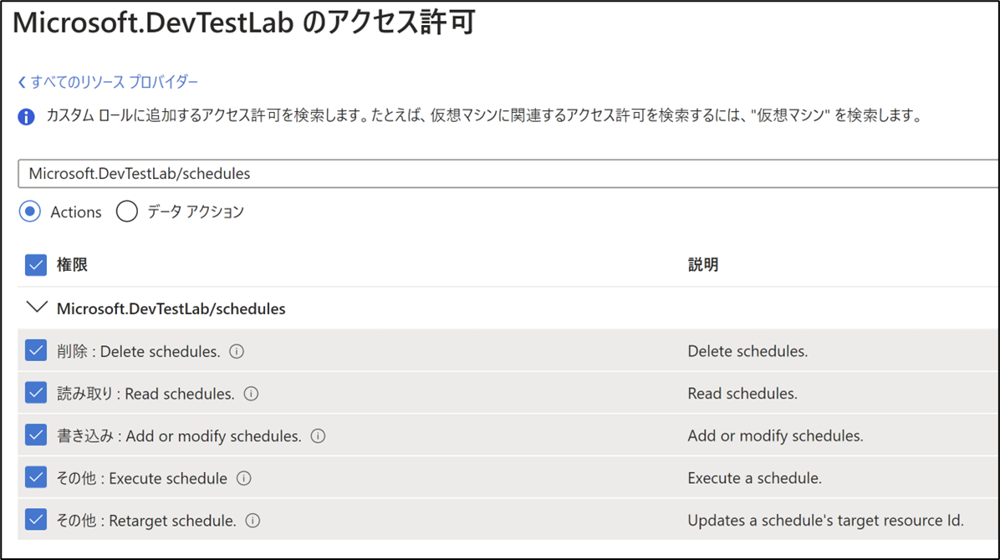
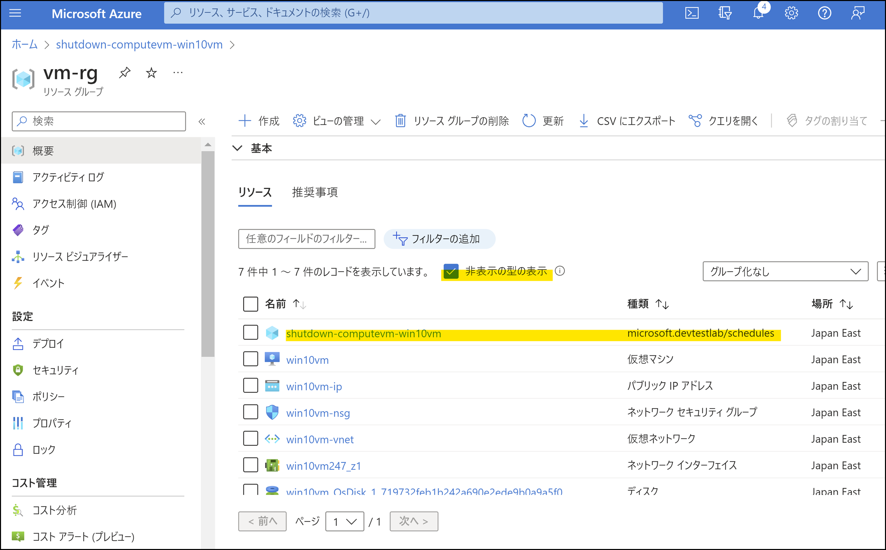
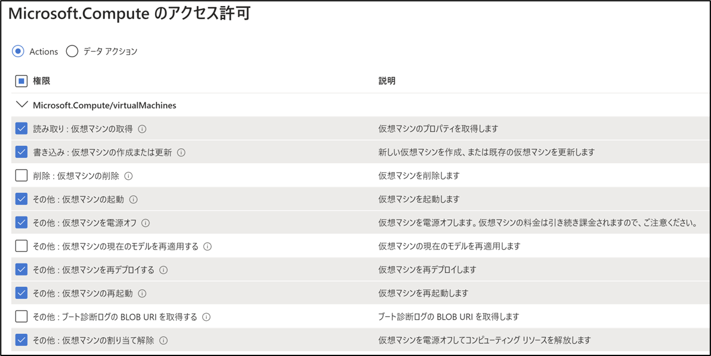
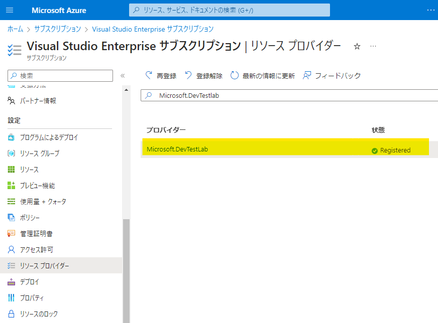

こんにちは、Japan Developer Support Core チームです🗻 サポートにはよく「Azure VM の自動シャットダウンを設定する際に必要な最小権限」についてお問合せがあります。 最初に結論を書きますが、残念ながら自動シャットダウンのみを設定するための権限は用意されていません。 自動シャットダウンの設定を行う際は、以下の 2 種類の権限が必要です。
1. 自動シャットダウンの設定リソースに対する権限
2. Azure VM に対する権限
1. 自動シャットダウンの設定リソースに対する権限
Azure VM の自動シャットダウン機能は、内部的に Azure DevTest Labs と呼ばれるサービスの Schedule 機能を利用しています。 そのため、自動シャットダウンの設定を行う際は、Microsoft.DevTestLab/schedules/* に対する権限が必要です。
- Delete: Delete schedules (削除 : Delete schedules)
- Read: Read schedules (読み取り : Read schedules)
- Write: Add or modify schedules (書き込み : Add or modify schedules)
- Other: Execute schedules (その他 : Execute schedules)
- Other: Retarget schedules (その他 : Retarget schedules)
<参考> 
また、自動シャットダウンの設定リソース (Microsoft.DevTestLab/schedules) は、Azure VM と同じリソース グループ配下に管理されています。 Azure Portal 上からは本リソースは既定で非表示になっているので、本リソースを表示されたい場合には、リソース一覧画面より「非表示の型の表示」にチェックすることで閲覧できるようになります。  ※自動シャットダウンの設定リソース名は既定で shutdown-computevm-$VMName となり、$VMName には Azure VM の名前が設定されます。
2. Azure VM に対する権限
自動シャットダウンの設定を行うには、自動シャットダウンの設定リソースに対する権限に加えて、Azure VM (Microsoft.Compute/virtualMachines) に対する以下の変更権限も必要です。
- Read: Get Virtual Machine (読み取り : 仮想マシンの取得)
- Write: Create or Update Virtual Machine (書き込み : 仮想マシンの作成または更新)
- Other: Start Virtual Machine (その他 : 仮想マシンの起動)
- Other: Power Off Virtual Machine (その他 : 仮想マシンを電源オフ)
- Other: Redeploy Virtual Machine (その他 : 仮想マシンを再デプロイする)
- Other: Restart Virtual Machine (その他 : 仮想マシンの再起動)
- Other: Deallocate Virtual Machine (その他 : 仮想マシンの割り当て解除)
<参考> 
ただし、Azure VM に対する変更権限を付与するので、自動シャットダウンの設定以外にも、Azure VM の設定に対して操作可能な多くの権限を与えてしまうことに注意してください。
3. カスタム ロールでの対応について
もし Azure VM への変更権限の付与が許容できて、自動シャットダウンの設定を行うために必要最小限を付与するためのカスタム ロールをご作成されたい場合は、上述で挙げた 2 種類の権限を参考にカスタム ロールをご作成ください。
- Microsoft.DevTestLab/schedules/*
- Microsoft.Compute/virtualMachines への各権限
Azure カスタム ロールの作成手順につきましては、以下の弊社ドキュメントをご参照ください。 Azure カスタム ロール - Azure RBAC | Microsoft Learn
4. 自動シャットダウンの設定に必要なリソース プロバイダーについて
自動シャットダウンの設定を行うためには、事前に Microsoft.DevTestLab リソース プロバイダーが登録済み (Registered) である必要があります。 もし自動シャットダウンの設定に必要な上述の各権限を持っているにも関わらず、自動シャットダウンの設定が保存できないような場合には、Azure Portal より、Azure VM が属するサブスクリプションの管理画面に遷移し、[設定\リソース プロバイダー]より Microsoft.DevTestLab リソース プロバイダーが登録済みであることをご確認ください。 
最後に
今回は、Azure VM の自動シャットダウンについて、よくいただくご質問である最小権限についての情報をご紹介しました。
今後も自動シャットダウンのご利用にお役立ていただける情報を、どんどんご紹介していきたいと思いますので、どうぞよろしくお願いします！
本ブログの内容は弊社の公式見解として保証されるものではなく、開発・運用時の参考情報としてご活用いただくことを目的としています。もし公式な見解が必要な場合は、弊社ドキュメント (https://learn.microsoft.com や https://support.microsoft.com) をご参照いただくか、もしくは私共サポートまでお問い合わせください。